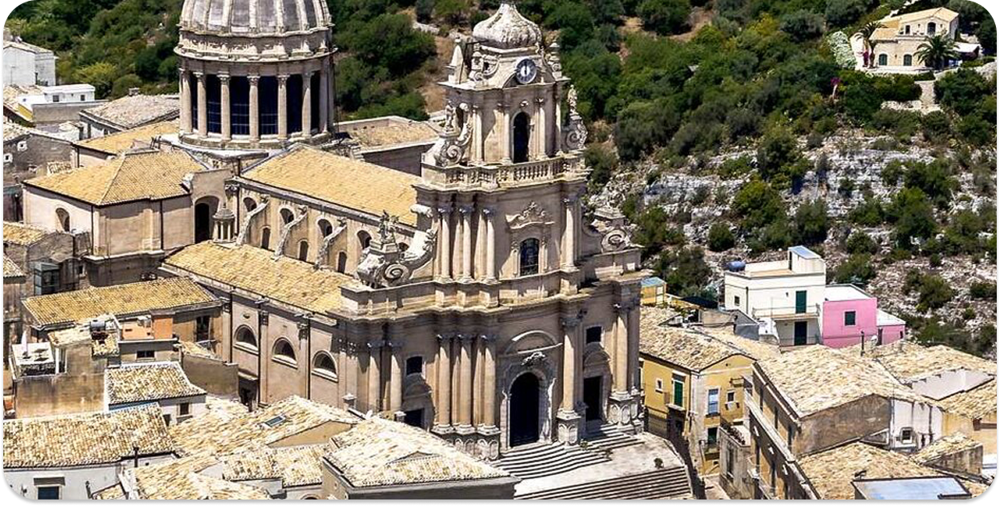
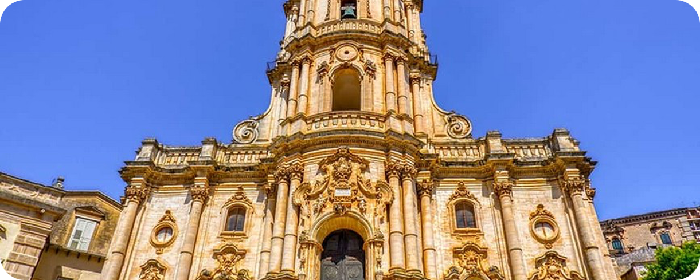
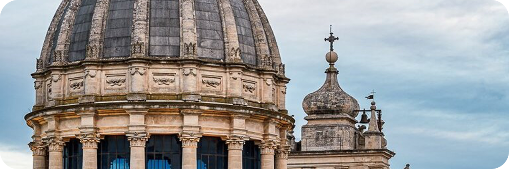

Piazza Duomo a Ragusa Ibla è uno degli spazi pubblici più significativi del centro storico di Ragusa e si apre dinanzi alla cattedrale di San Giorgio, uno dei capolavori del barocco siciliano.
Dove si trova la piazza?
Piazza Duomo si colloca nel cuore del centro storico di Ragusa Ibla. La piazza è raggiungibile attraverso le vie storiche di Ibla ed è connessa ai principali percorsi pedonali che attraversano il tessuto barocco della città.
Ruolo della Cattedrale
La Cattedrale di San Giorgio è l’edificio religioso principale di Ragusa Ibla ed è dedicata a San Giorgio, patrono della città. La chiesa si eleva su un’ampia scalinata, creando un potente punto di riferimento per l’orientamento e la percezione urbana dell’intero quartiere.
Elementi importanti
Piazza Duomo a Ragusa è caratterizzata da elementi architettonici e urbanistici che la rendono riconoscibile, la scalinata monumentale – ampia serie di gradini che collegano la piazza e la chiesa, rafforzando il senso di ascensione e la relazione spaziale tra la città e l’edificio sacro.
Spazio simbolico della città
La piazza rappresenta il punto di maggiore identificazione urbana per Ragusa Ibla: lo spazio pubblico si struttura come una platea di fronte alla grande scena architettonica del Duomo, esprimendo il ruolo della religione e dell’estetica barocca nella storia urbana della città. L’intero complesso costituisce uno dei luoghi più riconoscibili del Barocco del Val di Noto, parte del patrimonio UNESCO.


